- 00 导读 余晟：我是怎么学习和使用正则的？.md.html
- 00 开篇词丨学习正则，我们到底要学什么？.md.html
- 01 元字符：如何巧妙记忆正则表达式的基本元件？.md.html
- 02丨量词与贪婪：小小的正则，也可能把CPU拖垮！.md.html
- 03 分组与引用：如何用正则实现更复杂的查找和替换操作？.md.html
- 04 匹配模式：一次性掌握正则中常见的4种匹配模式.md.html
- 05 断言：如何用断言更好地实现替换重复出现的单词？.md.html
- 06 转义：正则中转义需要注意哪些问题？.md.html
- 07 正则有哪些常见的流派及其特性？.md.html
- 08 应用1：正则如何处理 Unicode 编码的文本？.md.html
- 09 应用2：如何在编辑器中使用正则完成工作？.md.html
- 10 应用3：如何在语言中用正则让文本处理能力上一个台阶？.md.html
- 11 如何理解正则的匹配原理以及优化原则？.md.html
- 12 问题集锦：详解正则常见问题及解决方案.md.html
- 加餐 从编程语言的角度来理解正则表达式.md.html
- 结束语 使用正则提高你的人生效率.md.html
- 捐赠
01 元字符：如何巧妙记忆正则表达式的基本元件？
你好，我是涂伟忠。今天是课程的第一讲，我们一起来学习组成正则表达式的基本单元——元字符。
元字符的概念
在开篇词中，我们提到了正则常见的三种功能，它们分别是：校验数据的有效性、查找符合要求的文本以及对文本进行切割和替换等操作。- 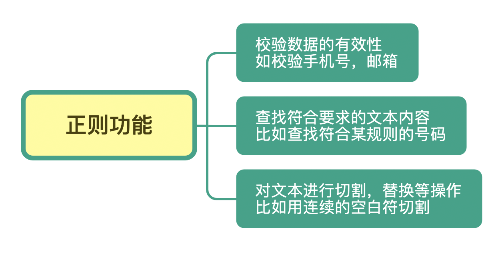
那你可能会好奇，正则是如何完成这些工作的呢？让我们先从简单的字符串查找和替换讲起。
我相信你一定在办公软件，比如Word、Excel 中用过这个功能。你可以使用查找功能快速定位关注的内容，然后使用替换，批量更改这些内容。
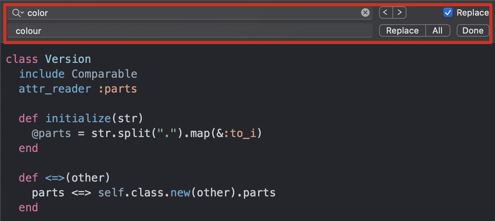
让我们再回过头看看正则表达式。正则表达式，简单地说就是描述字符串的规则。在正则中，普通字符表示的还是原来的意思，比如字符 a，它可以匹配“Hanmeimei is a girl”中的 H 之后的 a，也可以匹配 is 之后的 a，这个和我们日常见到的普通的字符串查找是一样的。
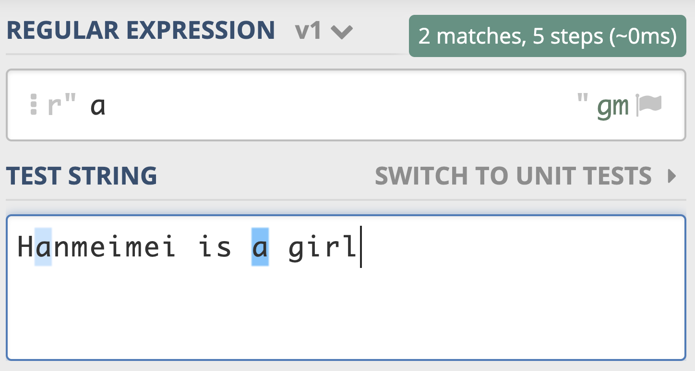
但除此之外，正则还可以做到普通的查找替换做不到的功能，它真正的强大之处就在于可以查找符合某个规则的文本。
举个例子，假如你想查找文本中的所有数字，如果不会正则，可能需要手动敲数字，从0到9这样操作10次，一个个去查找，很麻烦。但如果用正则的话就方便很多了，我们直接使用 \d 就可以表示 0-9 这10个数字中的任意一个，如下图所示。
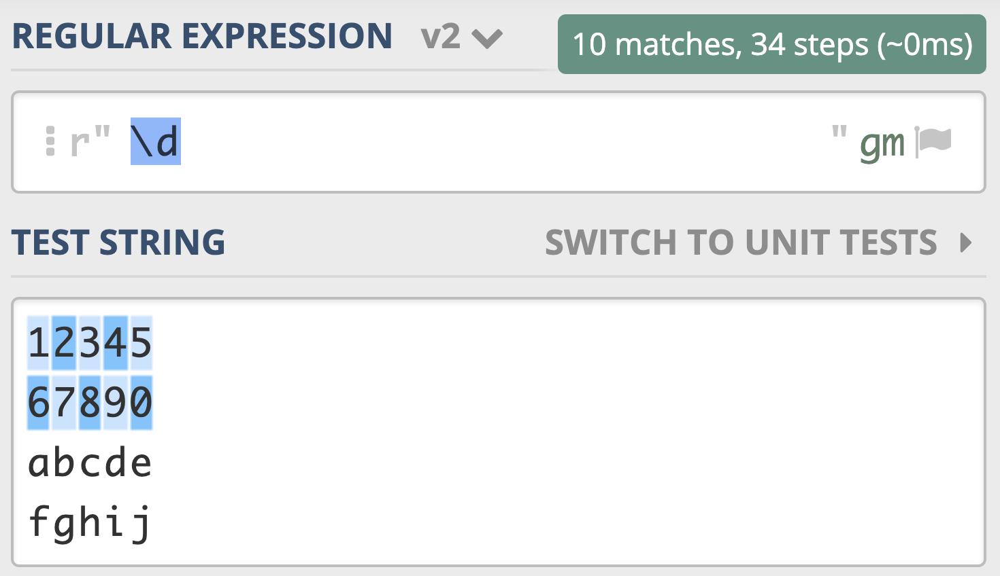- 如果我们在后面再加上量词，就可以表示单个的数字出现了几次。比如 \d{11} 表示单个数字出现11次，即11位数字，如果文本中只有姓名和手机号，我们就可以利用这个查找出文本中的手机号了，如下图所示。
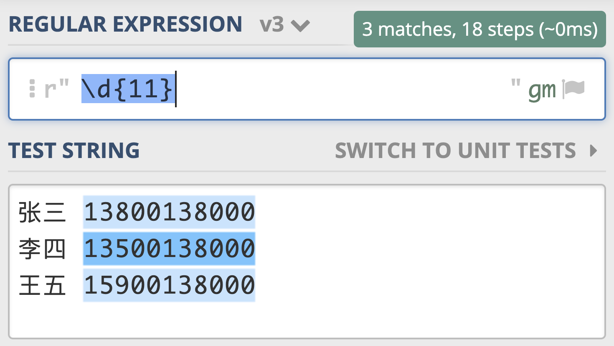- 那么到这里，你有没有发现正则的不同呢？像查找数字一样，在正则中，我们不需要像往常一样输入一个确定的内容，只需要敲入特殊的符号就可以帮我们完成查找和替换，像上面案例中提到的 \d 和 {11}，在正则中有一个专门的名称——元字符（Metacharacter）。
所谓元字符就是指那些在正则表达式中具有特殊意义的专用字符，元字符是构成正则表达式的基本元件。正则就是由一系列的元字符组成的，看到这里相信你也能明白元字符的重要性了吧。
但是，因为元字符很基础，又比较多，所以很多人看见正则就头疼。那么今天，我就通过分类的方式，教你理解并且巧妙地记忆、使用元字符。
元字符的分类与记忆技巧
正则表达式中有很多的“元字符”，比如刚刚提到的 \d，它在正则中不代表 \ （反斜杠） 加字母 d，而是代表任意数字，这种表示特殊含义的字符表示，就是元字符。正则表达式中，元字符非常多，那么我们如何才能记住它们呢？
这里我给你介绍一个方法，就是分类记忆。元字符虽然非常多，但如果我们按照分类法去理解记忆，效果会好很多。事实上，这个方法不光可以用在记忆元字符上，也可以用在记忆各种看似没有章法的内容上。
首先，我可以把元字符大致分成这几类：表示单个特殊字符的，表示空白符的，表示某个范围的，表示次数的量词，另外还有表示断言的，我们可以把它理解成边界限定，我会在后面的章节中专门讲解断言（Assertions）相关的内容。- 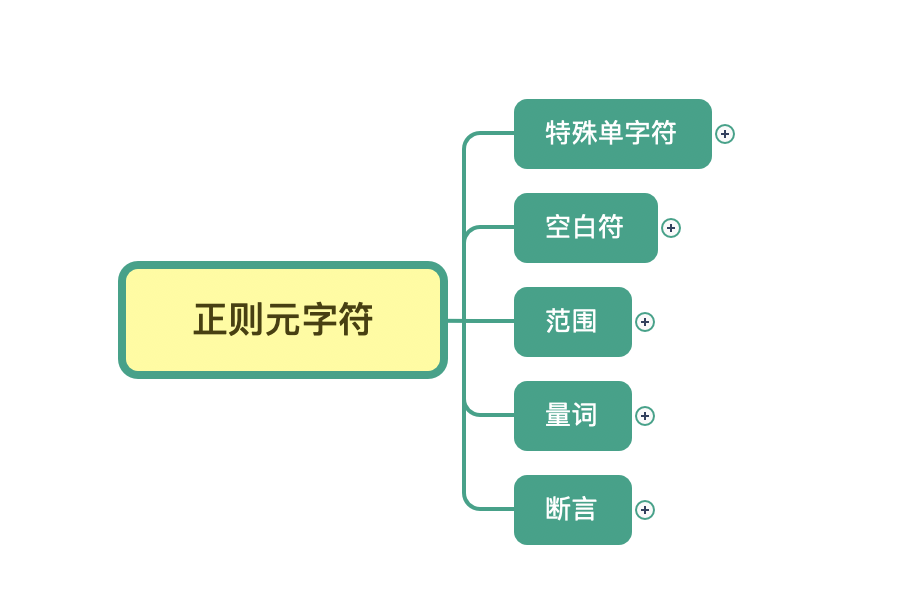
那么接下来，我们就按照前面说的元字符的分类，来逐一讲解下。
1.特殊单字符
首先，我们来看下表示特殊单个字符的元字符，比如英文的点（.）表示换行以外的任意单个字符，\d 表示任意单个数字，\w 表示任意单个数字或字母或下划线，\s 表示任意单个空白符。另外，还有与之对应的三个 \D、\W 和 \S，分别表示着和原来相反的意思。
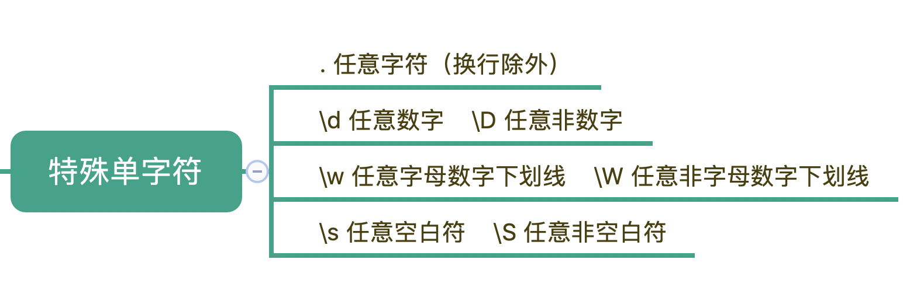
现在我们来看一下测试，我把常见数字，字母，部分标点符号作为文本，用 \d 去查找，可以看到只能匹配上10个数字。
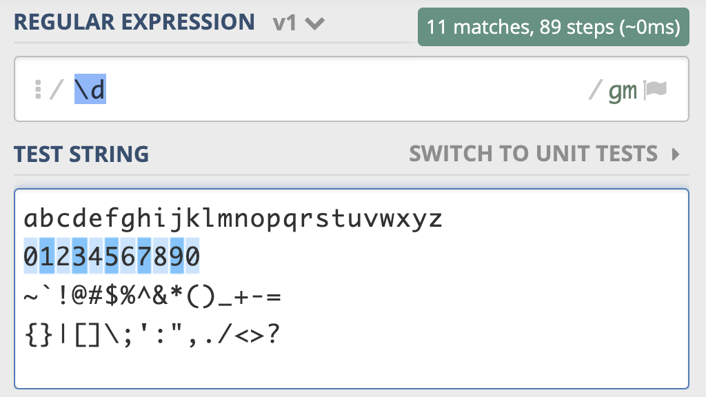
这是元字符 \d 测试用例的链接，你不妨测试一下：https://regex101.com/r/PnzZ4k/1
元字符 \w 能匹配所有的数字、字母和下划线，如下图所示：
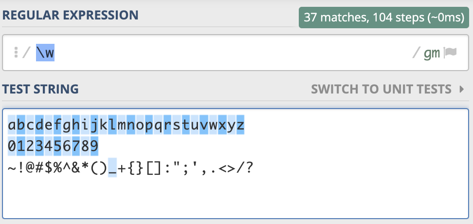- 同样的，元字符 \w 测试用在这里：https://regex101.com/r/PnzZ4k/2
你可以自己去尝试一下 \W，\D，\s 和 \S ，以及英文的点的匹配情况，这里我不展开了。
2.空白符
除了特殊单字符外，你在处理文本的时候肯定还会遇到空格、换行等空白符。其实在写代码的时候也会经常用到，换行符 \n，TAB制表符 \t 等。
有编程经验的程序员肯定都知道，不同的系统在每行文本结束位置默认的“换行”会有区别。比如在Windows 里是 \r\n，在 Linux 和 MacOS 中是 \n。
在正则中，也是类似于 \n 或 \r 等方式来表示空白符号，只要记住它们就行了。平时使用正则，大部分场景使用 \s 就可以满足需求，\s 代表任意单个空白符号。
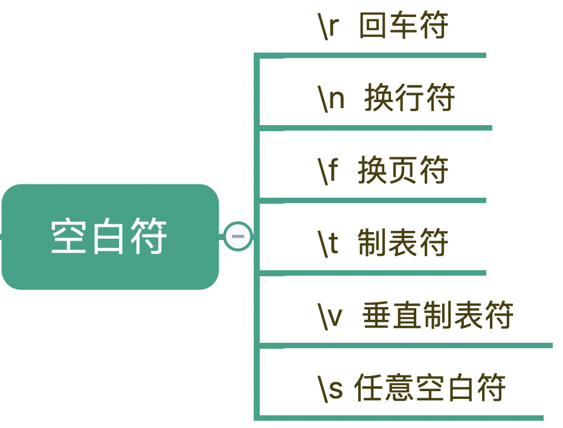
我们可以看到， \s 能匹配上各种空白符号，也可以匹配上空格。换行有专门的表示方式，在正则中，空格就是用普通的字符英文的空格来表示。
3.量词
刚刚我们说到的“基础”的元字符也好，“空白符”也好，它们都只能匹配单个字符，比如\d只能匹配一个数字。但更多时候，我们需要匹配单个字符，或者某个部分“重复N次”“至少出现一次”“最多出现三次”等等这样的字符，这个时候该怎么办呢？
这就需要用到表示量词的元字符了。
在正则中，英文的星号（*）代表出现0到多次，加号（+）代表1到多次，问号（?）代表0到1次，{m,n}代表m到n次。
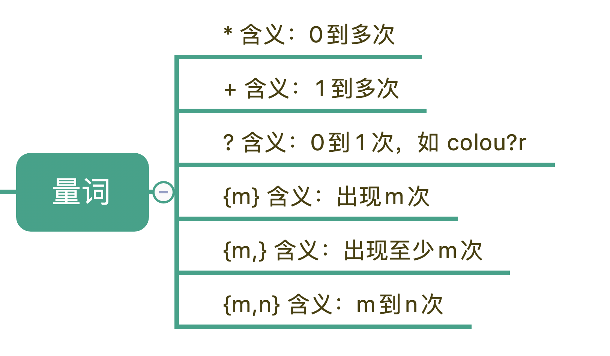
比如，在文本中“颜色”这个单词，可能是带有 u 的 colour，也可能是不带 u 的 color，我们使用 colou?r 就可以表示两种情况了。在真实的业务场景中，比如某个日志需要添加了一个user字段，但在旧日志中，这个是没有的，那么这时候可以使用问号来表示出现0次或1次，这样就可以表示user字段存在和不存在两种情况。
下面这段文本由三行数字组成，当我们使用 \d+ 时，能匹配上3个，但使用 \d* 时能匹配上6个，详细匹配结果可以参考下面的图片：
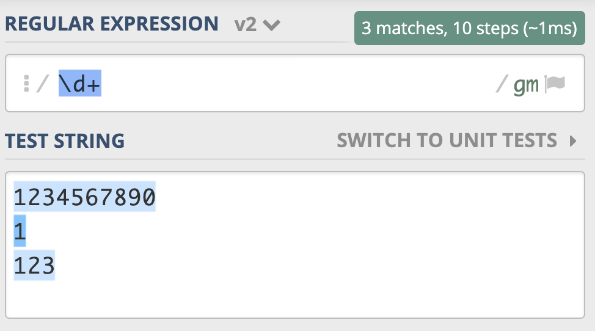
我把正则 \d+ 示例链接放在下面了，你可以看一下：https://regex101.com/r/PnzZ4k/8
其它的比如表示 m 到 n 次的，你可以自己去尝试，一定要多加练习，这样你才能记得牢。
4.范围
学习了量词，我们就可以用 \d{11} 去匹配所有手机号，但同时也要明白，这个范围比较大，有一些不是手机号的数字也会被匹配上，比如11个0，那么我们就需要在一个特殊的范围里找符合要求的数字。
再比如，我们要找出所有元音字母aeiou的个数，这又要如何实现呢？在正则表达式中，表示范围的元字符可以轻松帮我们搞定这样的问题。
在正则表达式中，表示范围的符号有四个分类，如下图所示。
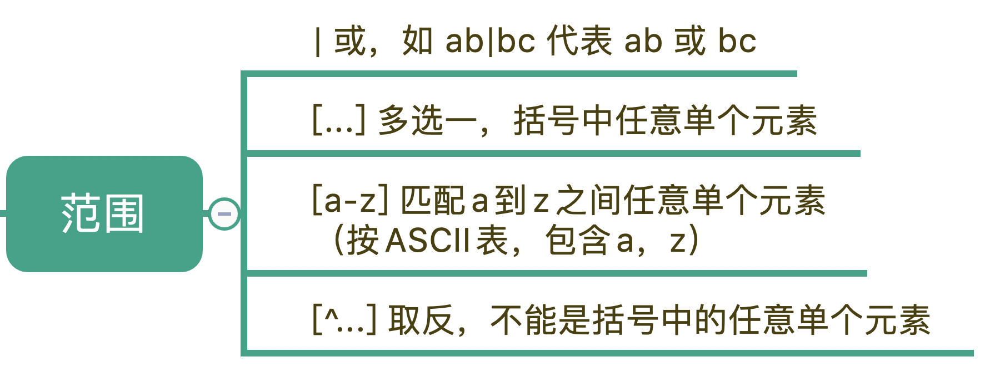
首先是管道符号，我们用它来隔开多个正则，表示满足其中任意一个就行，比如 ab|bc 能匹配上 ab，也能匹配上 bc，在正则有多种情况时，这个非常有用。
中括号[]代表多选一，可以表示里面的任意单个字符，所以任意元音字母可以用 [aeiou] 来表示。另外，中括号中，我们还可以用中划线表示范围，比如 [a-z] 可以表示所有小写字母。如果中括号第一个是脱字符（^），那么就表示非，表达的是不能是里面的任何单个元素。
比如某个资源可能以 http:// 开头，或者 https:// 开头，也可能以 ftp:// 开头，那么资源的协议部分，我们可以使用 (https?|ftp):// 来表示。
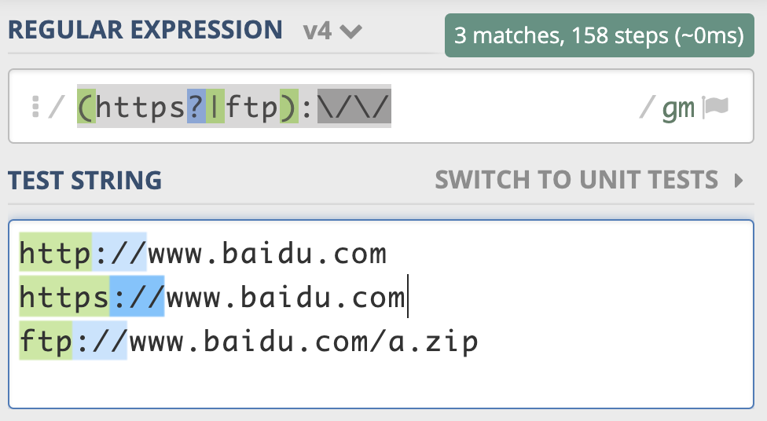
同样地，我把示例链接也放在了下面，你可以参考一下：https://regex101.com/r/PnzZ4k/5
总结
今天我通过大量的示例讲解了元字符，希望可以帮助你加强对正则各类元字符的理解，想办法记住它们，这是掌握正则这个强大工具的第一步。
我在这里给你强调一下学习的方法。你可以看到我在每一个案例中加入了测试链接，目的就是希望你能借此多做练习。在学习过程中，一定要找时间去练习，去观察匹配的结果，这样可以帮助你加深记忆。如果只是看和听，没有足够的练习，实际上很难记得牢，所以一定要自己多动手操作尝试。
还有一个方法，你可以把学到的知识，试着讲给其它的同事或同学，最好的学习方法就是去教别人，一个知识点，如果你能给别人讲明白，证明你真的搞懂了，真的掌握了这个知识。
好了，学习完今天的内容，最后我来给你总结一下。正则表达式中元字符的分类记忆，你可以在脑海中回忆一下。今天我们学习了正则表达式的部分元字符，特殊单字符、空白符、范围、量词等。我整理成了一张脑图，你可以看一下，对照着练习、记忆。
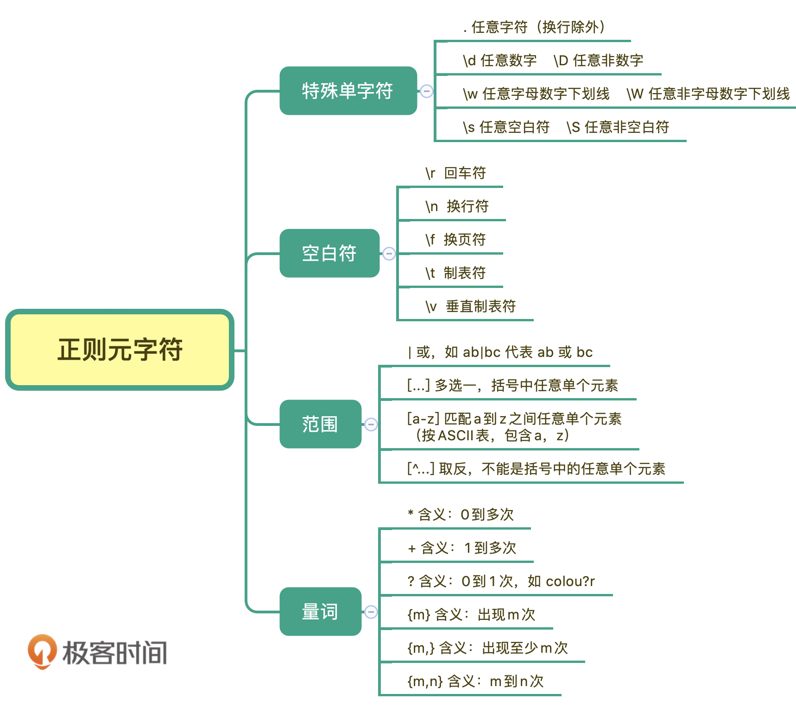
思考题
通过今天的学习，不知道你元字符掌握到何种程度了呢？那么不妨练习一下吧！我在这里给出一些手机号的组成规则：
- 第1位固定为数字1；
- 第2位可能是3，4，5，6，7，8，9；
- 第3位到第11位我们认为可能是0-9任意数字。
你能不能利用今天学到的知识，写出一个“更严谨”的正则来表示手机号呢？
好，今天的课程就结束了，希望可以帮助到你，也希望你在下方的留言区和我参与讨论，让我们一起进步，共同掌握正则表达式这个强大的工具。
© 2019 - 2023 Liangliang Lee. Powered by gin and hexo-theme-book.